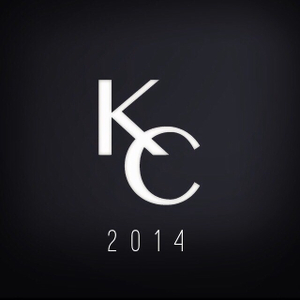
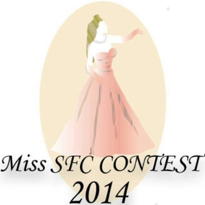

ステージ

Keio Collection 2014
- 開催日時
- ~
- 開催場所
- メディアセンター前
特設ランウェイ - 企画内容
- 「Never as before」
ファッションショー、やります。2014年。今までのイメージを一新して、モデル、メイク、撮影、編集、全てが慶應生によって作り上げたショーを、いま、秋祭に。 - リンク
- Keio Collection公式Facebookページ
大道芸慶早戦
- 開催日時
- ~
- 開催場所
- Sステージ
- 企画内容
- このSFCの場でなんと新たな早慶戦、いや、慶早戦が開催されます！その名も大道芸慶早戦！！超ハイレベルな大道芸に加え、各大学を代表するチアの参戦も！？これを見逃すとあなたは一生後悔することになるでしょう！
- リンク
ミスターSFCコンテスト2014
- 開催日時
- ~
- ~
- 開催場所
- Mステージ(11日)
- θ館ステージ(12日)
- 企画内容
- 11日は、観客チーム VS Mr.チームで対決！Mr.チームが負けたら恐ろしい罰ゲームが！カラーボール企画で素敵なプレゼントGET！？
そして12日は、ついにグランプリ結果発表！感動の瞬間を見逃すな！ - リンク
- ミスターSFCコンテスト公式Twitter
- ミスターSFCコンテスト公式Facebookページ
SFC48
- 開催日時
- ~
- 開催場所
- Sステージ
- 企画内容
- ついにSFCに学生アイドル誕生！でも、ただのアイドルじゃない！？
実は彼女たち全員オトコの子。アイドルの常識ぶち壊しちゃいます！最高に可愛くて面白いSFC48のステージデビューを目撃せよ！ - リンク
- 特設ページへ（投票もこちらから）
- SFC48公式Twitter
Blessing for AKI23rd
- 開催日時
- ~
- 開催場所
- Sステージ
- 企画内容
- ニコニコ動画で話題を集めている「Blessing」という曲を、SFCに在籍する学部生や講師のみで7カ国語を使って歌おうという企画です。外国語教育が盛んなSFCの特色を活かし言語の魅力の再発見を目指しています！
- リンク

ミスSFCコンテスト2014
- 開催日時
- ~
- ~
- 開催場所
- Mステージ(11日)
- θ館ステージ(12日)
- 企画内容
- 有名アイドルや女優も多く通うSFCキャンパス。
そんなSFCのグランプリであるミスSFCを獲得するのは一体誰なのか！
今年のミスコンは涙あり、笑いあり、候補者の苦悶と赤面の表情もあり！？ - リンク
- ミスSFCコンテスト公式Twitter
- ミスSFCコンテスト公式Facebookページ